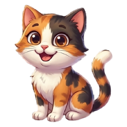
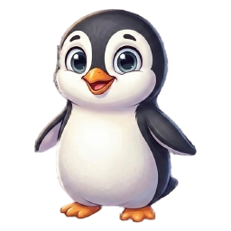
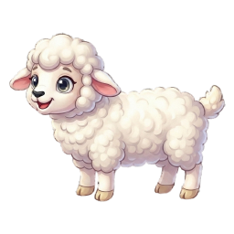

Every option here keeps the friend in full colour at all times — the art is never dimmed.
Four stages each: three-quarters to go, half, nearly there, ready. Ready is always warm gold, never green.
B1 · The lip fills no new object
The badge already stands on a solid brass edge — that edge is what makes it read as a
physical block. It fills with amber left to right. Nothing is added to the badge at all; the part of
it that already exists simply lights up.

early
half
almost

ready
B2 · A track under the badge outside the tile
A slim rail in the gap below, completely off the tile. The badge itself is left untouched —
no rim, no overlay, no edge change. Costs 12px of shelf height.
early
half
almost
ready
B3 · Pips under the badge exact count
One dot per sign still needed, lighting up as they land. The only option that tells you
exactly how many words to go without tapping — the old number badge's job, moved off the art.
1 of 4
2 of 4
3 of 4
ready
B4 · A notch set into the foot
A short inlaid gauge sunk into the bottom of the frame — like a level on a tool. Reads as
part of the badge's making rather than a bar laid over it.
early
half
almost
ready
C1 · Sunrise behind the friend strongest read
Warm light rises up the face from below, so the friend is standing in a growing dawn.
Much more visible than the small pool at its feet, and it is light — not an object.
early
half
almost
ready
C2 · A halo grows behind it
The pool at its feet becomes a full halo, spreading outward from behind the creature as
it nears its sign. Pure atmosphere, no geometry.
early
half
almost
ready
C3 · The brass warms no new object
The rim itself thickens and brightens from pewter-brass toward lit gold, and the whole
badge finally casts a warm light when ready. Nothing is added or covered — the frame just heats up.
early
half
almost
ready
Shelf test · five friends at mixed stages
The real question is not how one badge looks but whether you can scan five and find the
one that is ready. B1 above, C1 below.

My read.B1 and C3 are the only two that add no object at all — they light
up something the badge already has (its foot, its rim). B3 pips is the one that keeps the exact
count you lose everywhere else. C1 sunrise has the strongest glance-read of the lot, but it tints
the porcelain, so the badge is less white than its neighbours while counting.
They also combine: B1 + C3 would fill the foot and warm the rim on the same beat, which is
probably the richest version without putting anything on the art.